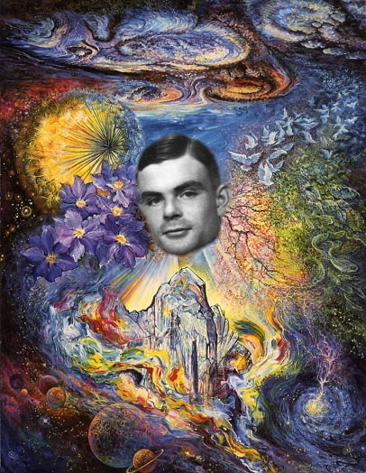

Conclusion

Theory and Practice
- Someone asked at Prof Copeland's lecture
- Here's one positive answer!
Automated Reasoning ... the Next Grand Challenge
- Logic plus ATP ... a "universal machine"
- Automated reasoning epitomizes AI
- Automated reasoning is part of our lives
- Automated reasoning is awfully hard
- Automated Reasoning is a key technology for
Machine Intelligence
- Let's invest ... our effort, your input and support
- We'll have a "deep impact" and "uplift the human spirit"!
(thank you, Andrew Yao)